质量检查与零值保留
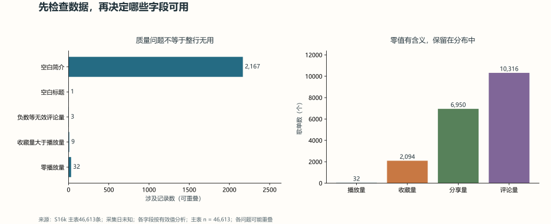
读图：左图检查问题规模；右图展示真实零值。几个问题可出现在同一行。
结果：主表仍保留 46,613 行；3 个评论量置缺失；2,167 条空白简介只影响文本任务。
数据分析作品 · Python · 历史快照与定向补充
以七个问题串联标签、分层、播放、主题、收藏、曲目和评论。呈现方法、真实结果与适用范围，所有交互使用本地汇总数据；公开版不提供评论原文或歌单逐条明细。
历史主表支撑主体分析，独立补充提供年龄和曲目数背景，新快照支撑完整曲目比较和评论线索。不同来源分别分析，不拼成同一时点的总体。旧歌曲关系是部分观察，不能替代真实曲目总数。
本文的“表现”主要指累计计数与聚合比值。没有曝光、用户级行为或随机实验，不能得出个人偏好、用户满意度或运营因果收益。
数据准备
分析方法：先建立计数、日期、标签和关系数据的口径，再比较长尾、分位数、头部集中度及不同标签类别。

读图：左图检查问题规模；右图展示真实零值。几个问题可出现在同一行。
结果：主表仍保留 46,613 行；3 个评论量置缺失；2,167 条空白简介只影响文本任务。
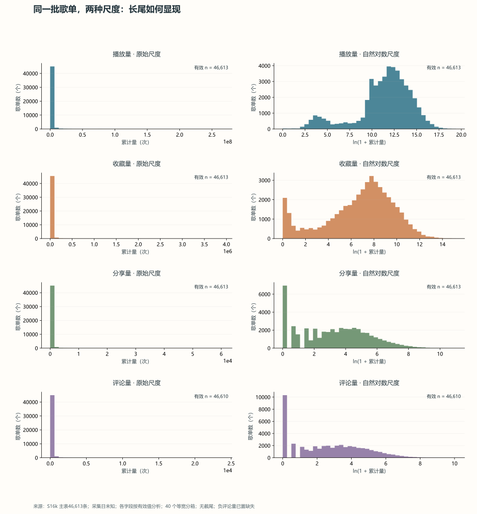
读图：左列完整保留长尾，所以多数记录挤在左端；右列压缩大值，能看到中低段结构。
结果：播放均值是中位数的 8.3 倍。对数图适合看形状，原始单位仍用于报告业务量级；不据此断言正态。
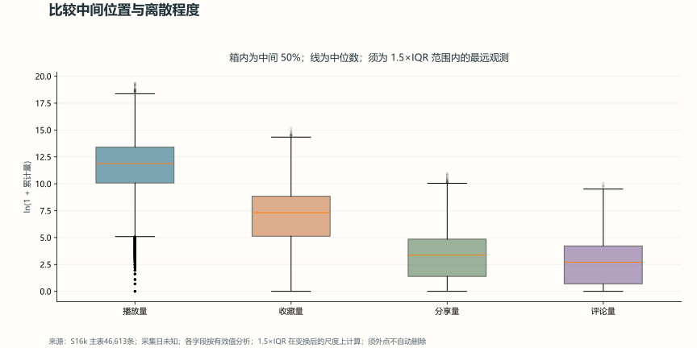
读图：箱体覆盖中间50%；中线为中位数；须外点不自动算数据错误。
结果：评论量只有 46,610 个有效值，比另外三项少3个；箱线统计按各自有效样本计算。
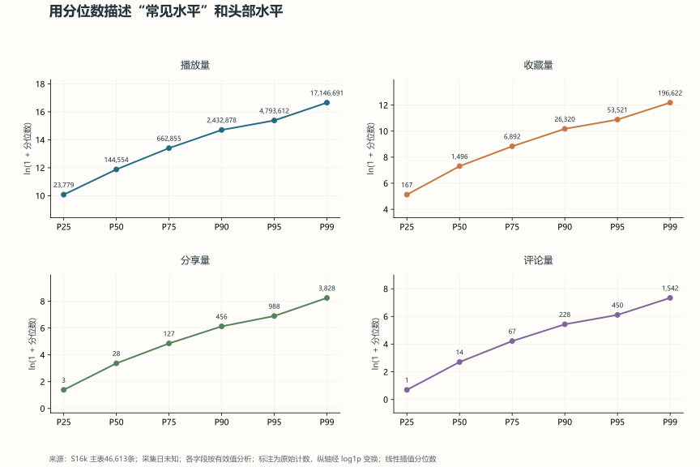
读图：横轴是百分位位置，标注是原始计数，纵轴是log1p。
结果：播放中位数 144,554，P95 约 4,793,612，P99 约 17,146,691；阈值差距很大，后续不能随意把均值当作业务分界。
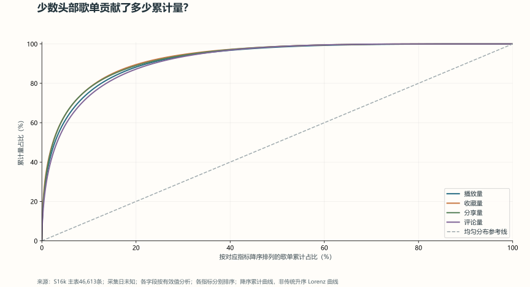
读图：先按对应指标从高到低排，再逐个累计；越快接近100%，越集中。
结果：播放前1%（467 个）占 33.3%，前10%占 75.4%。这是样本内部的集中度，不是全平台市场份额。
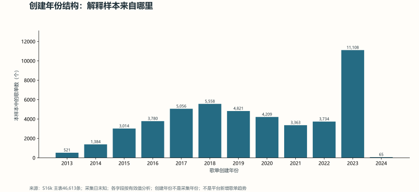
读图：柱高表示本数据里该年创建的歌单数；不是当年平台新增总数。
结果：2024年仅覆盖到1月初的创建日期，不能与全年直接比较；历史采集日期未知，暂不构造精确歌单年龄。
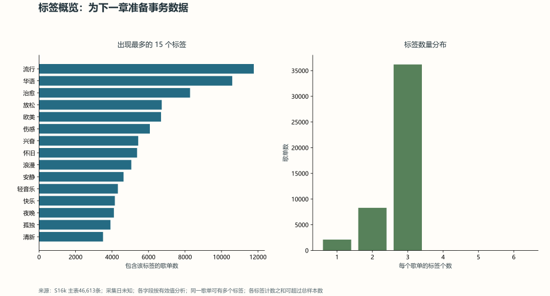
读图：左图是多选标签计数；右图按每个歌单标签个数计数。
结果：标签频次受情绪入口采样影响。频次高不等于搭配有提升度，第1章才检验共现规则。
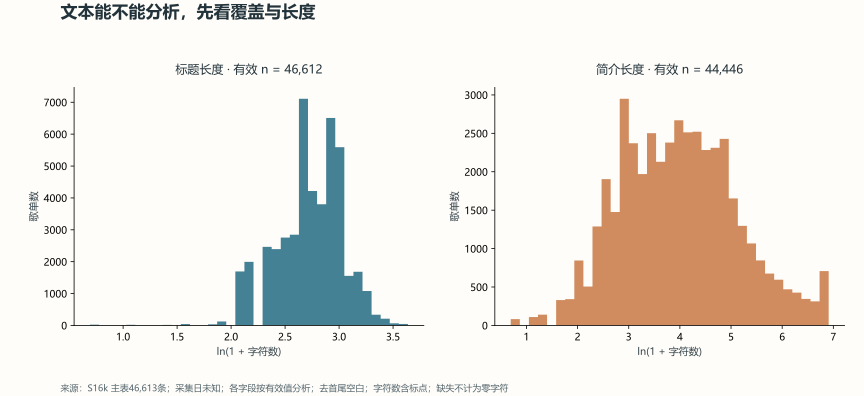
读图：横轴压缩长文本；有效样本不包括空白。长度统计包括标点，不是词数。
结果：可用简介 44,446 条。短文本、复制模板和内容意义还需要第4章进一步检查，不能仅凭长度判断主题质量。
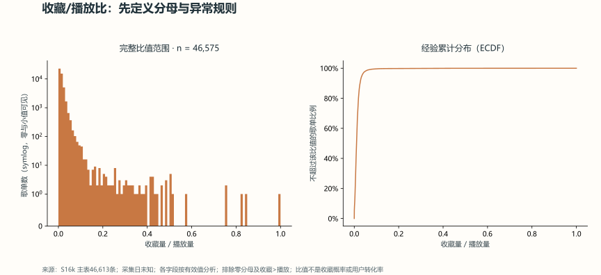
读图：左图显示完整0到1范围；右图读“多少歌单不超过某比值”。左图纵轴为能显示0的对称对数刻度。
结果：严格口径 n=46,575，中位数 1.016%。已同时保存含>1记录的敏感性摘要。播放可重复、收藏口径不同，所以比值不能称为用户收藏概率。
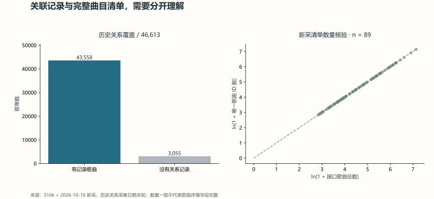
读图：左图检查历史覆盖；右图对照新采唯一歌曲ID数量与接口歌曲总数。
结果：历史有关系覆盖 43,558 个歌单；其余缺的是关系记录，不能推断为空歌单。新采89个清单数量一致，可供第6章使用，仍需保留采集时点。
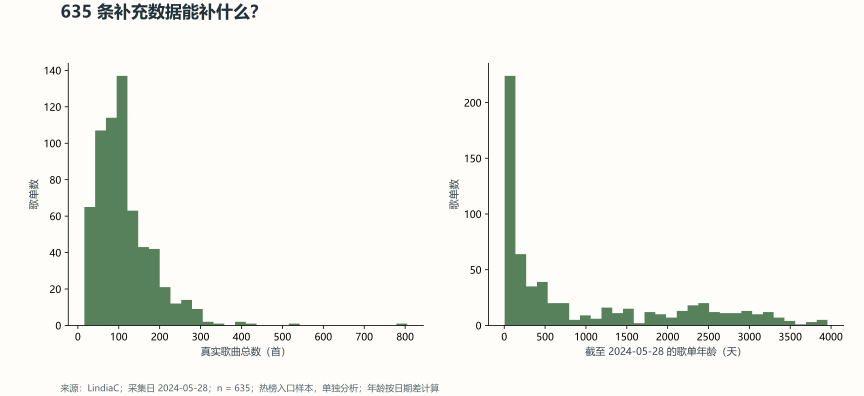
读图：两张图只用这635条；年龄以来源明确的采集日减创建日。
结果：曲目数中位数 100 首；其中 119 个评论字段无法转为数值。它来自热榜入口，不是历史主表的同分布补样。
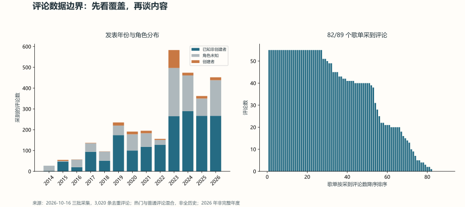
读图：年份按发表时间；右图按采到评论数排序，而非平台总评论量。
结果：文本发表于 2014-06-29 至 2026-10-16。已知创建者179条、角色未知1019条；不在本章直接打满意度标签。近90天评论只覆盖21个歌单，不适合包装成平台近期趋势。
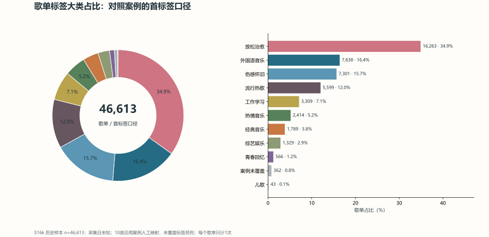
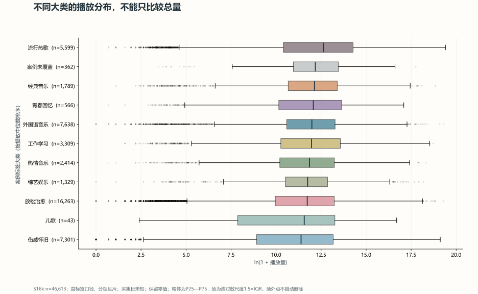
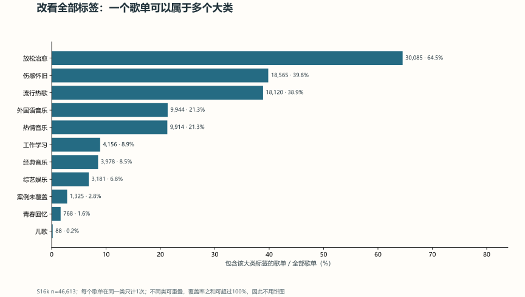
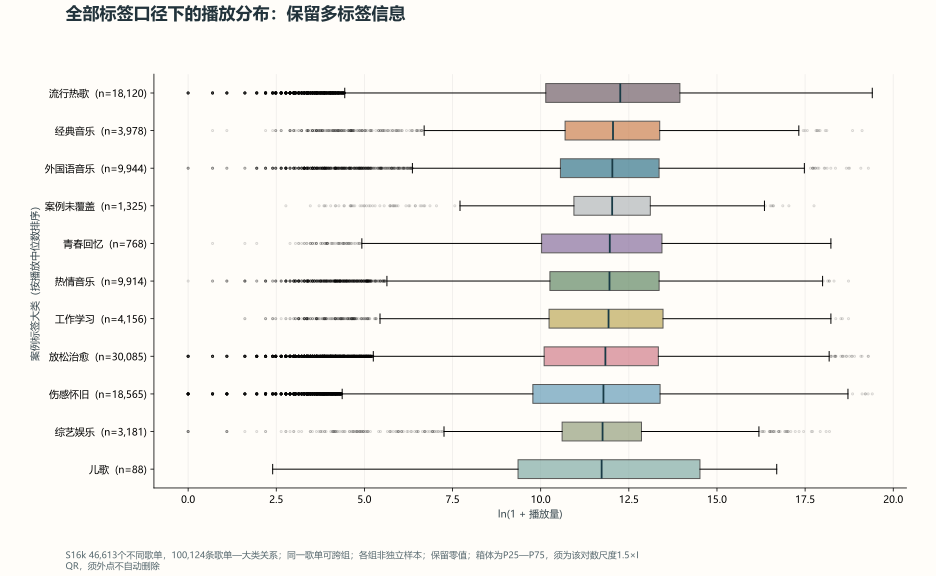
问题 1
分析方法：标签共现、Apriori、支持度、置信度、提升度和冻结候选核验。
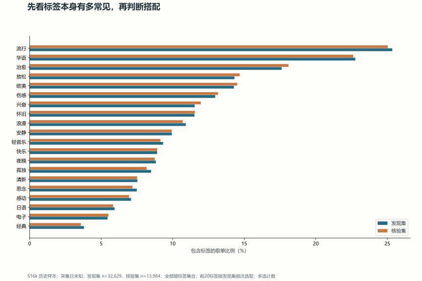
读图：每条是含该标签的歌单占比，分母分别为发现集和核验集。
结果：两组来自同一来源，比例相近可作为内部核验背景；这不说明采样偏差已经消失。
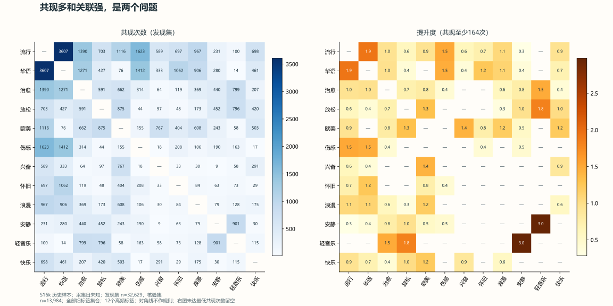
读图：两边使用同一批12个高频标签。次数图深色不一定在提升度图也最深；右图没有达到共现门槛的格子留空。
结果：这一图是单标签对的对称关系；完整规则还包括2→1和1→2的多标签集合。
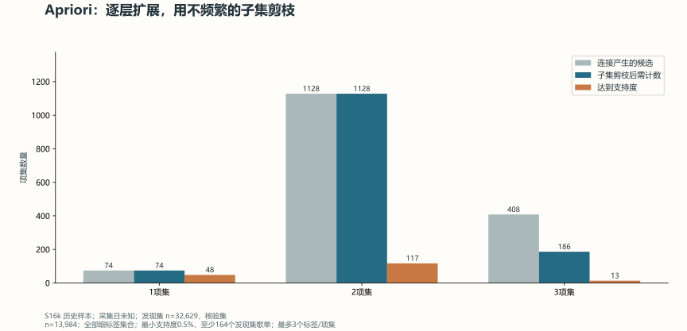
读图：灰色是连接候选，蓝色是子集剪枝后需要计数的候选，橙色是达到支持度的项集。
结果：3项候选由408个剪到186个，最终13个达到门槛；本次不搜索4项及更长集合。
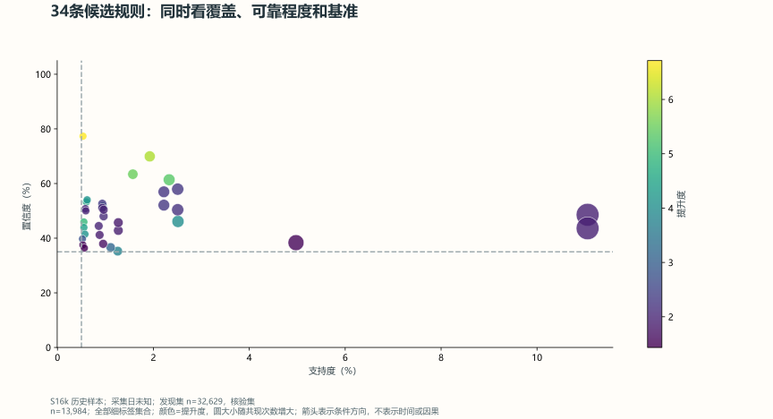
读图：横轴支持度，纵轴置信度，颜色为提升度；大圆表示更多歌单共同支持。
结果：默认留下34条规则。两条支持度相同的反向规则可能落在不同高度；高提升度也可能覆盖很小的人群。
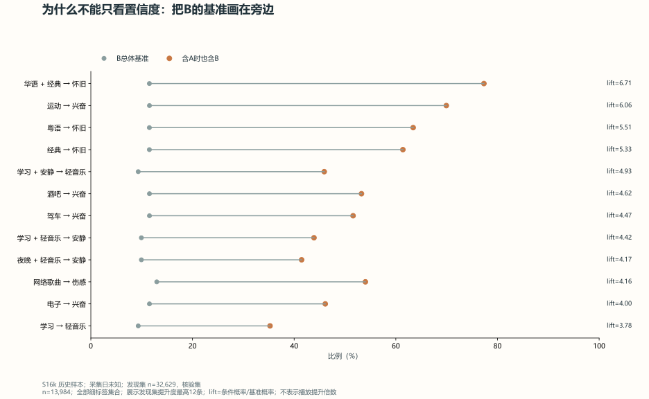
读图：每行两点：灰点是B总体比例，橙点是有A时B的比例。右边标提升度。
结果：排在最上方的复杂规则未必最适用；还要看覆盖、语义、内容是否贴合，不能为凑标签套用。
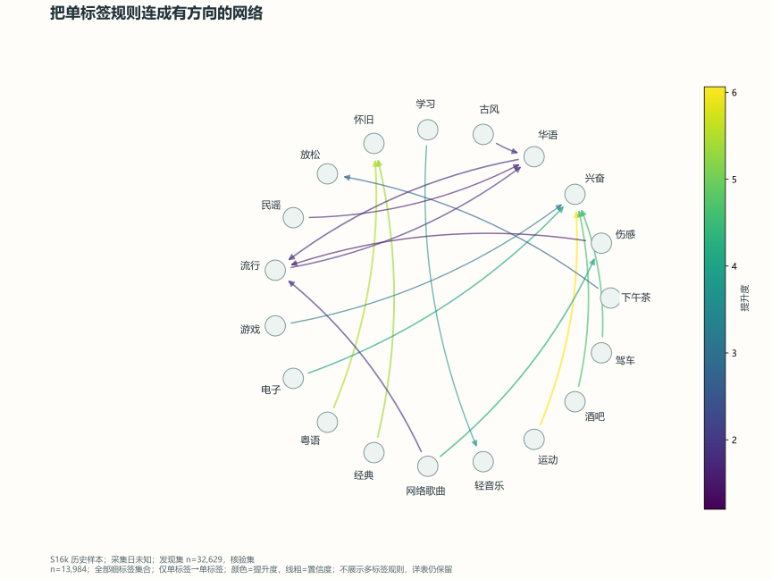
读图：箭头A→B对应条件方向，线粗看置信度，颜色看提升度；节点位置是圆形展示布局，没有距离意义。
结果：图只画16条单标签→单标签规则。其余多标签规则保留在完整表和交互区，不能因为图里没画就认为不存在。
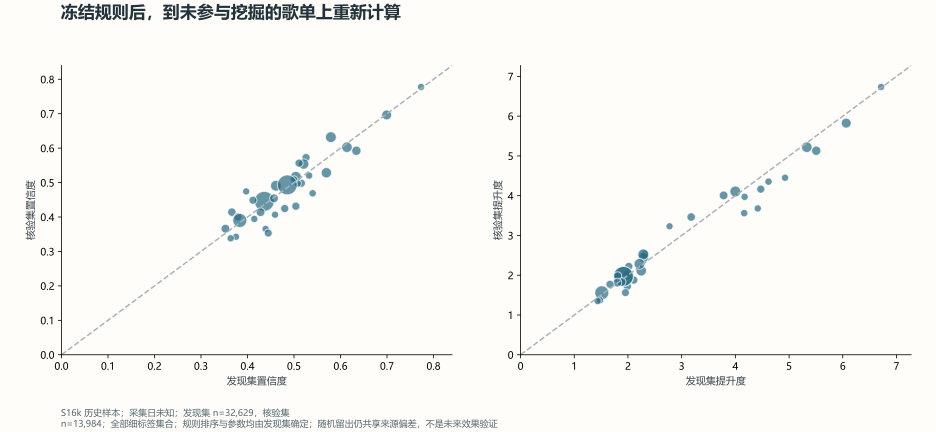
读图：每点同一条规则；虚线表示两组指标相等。偏离较大时要回到计数和原文样本检查。
结果：34/34条规则在核验集仍lift>1，但只有31条同时满足原三项门槛，3条未完整达标；共现数至少30不等于支持度达到0.5%。这不是显著性检验或线上效果证明。
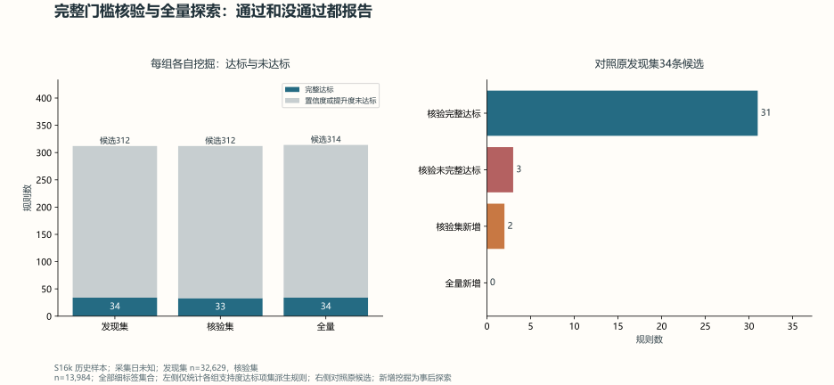
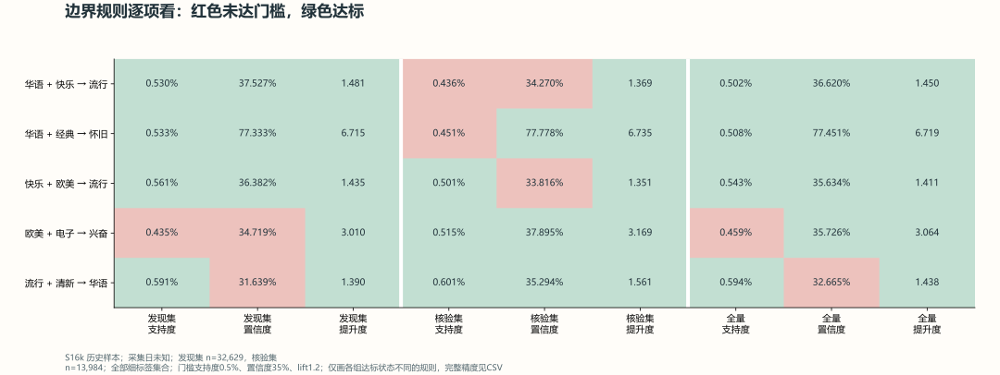
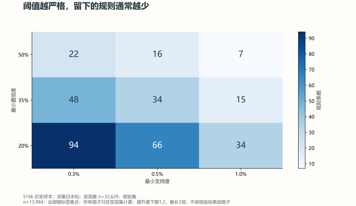
读图：每个格子是发现集独立挖掘留下的规则数；支持度、置信度越严，候选通常越少。
结果：此图只用发现集。默认0.5%/35%已经固定，没有查看核验成绩后改门槛。阈值越高也不自动等于规则越有业务价值。
| 规则 | 支持度 | 置信度 | 提升度 | 核验状态与未达原因 |
|---|
问题 2
分析方法：四个累计量先ln(1+x)和标准化，比较K=2—8，再看中心、组内差异、留出与稳定性。
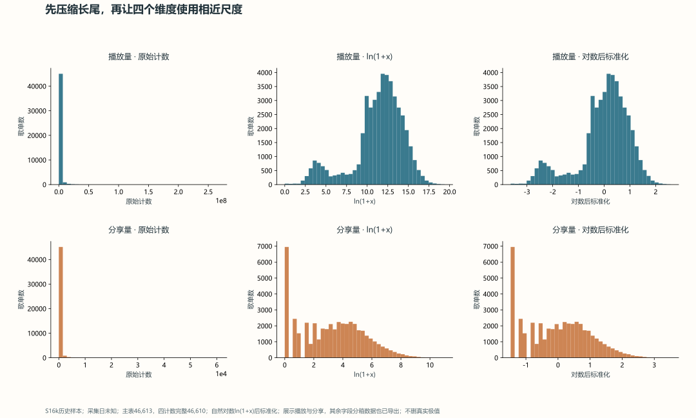
读图：原始尺度被极值拉长；对数缩短尾部；标准化改变均值和尺度，不再改变分布形状。
结果：46,610条完整记录保留全部真实极值与零值；没有为了图好看截尾。
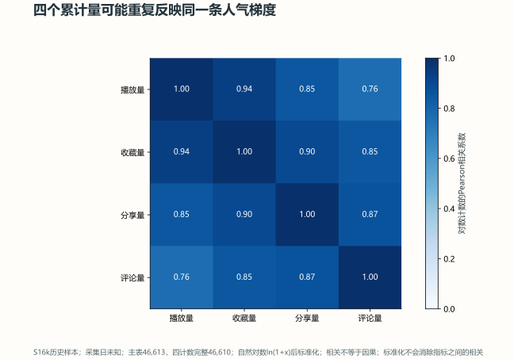
读图：越接近1，两个对数累计量越同步；这不会因标准化自动消失。
结果：PCA第一主成分解释89.7%的标准化方差，可结合后面的载荷表判断是否主要是一条共同的累计表现方向。
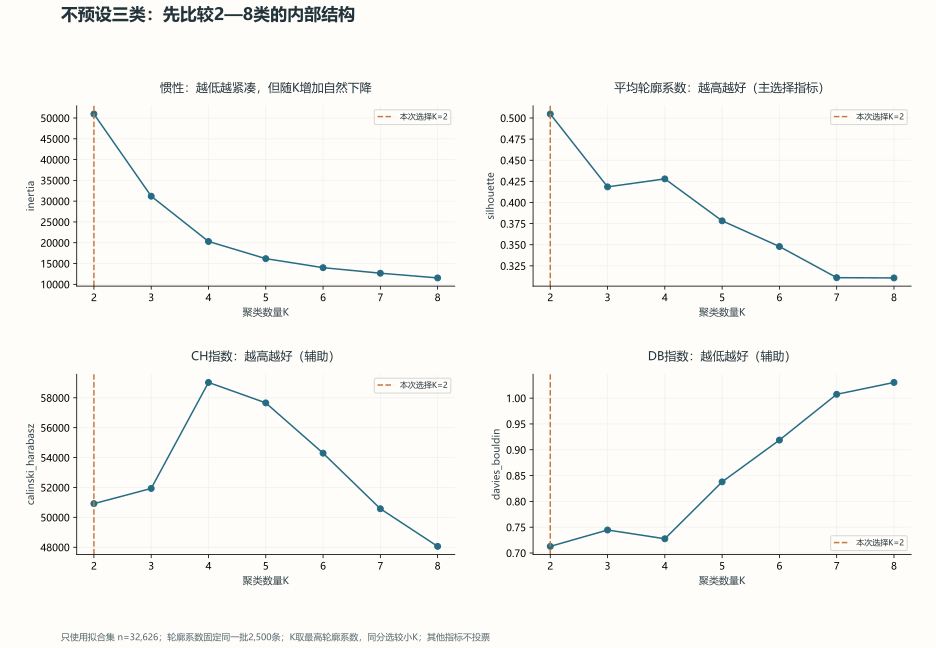
读图：轮廓系数越高越好；惯性、DB越低越好；CH越高越好。不同指标不一定一致。
结果：固定32,626条拟合集；同一批2,500条抽样上，K=2的轮廓系数最高，为0.505。第二高为K=4、0.428。本章按预先明确的主指标取K=2，不宣称存在唯一真实类别数。
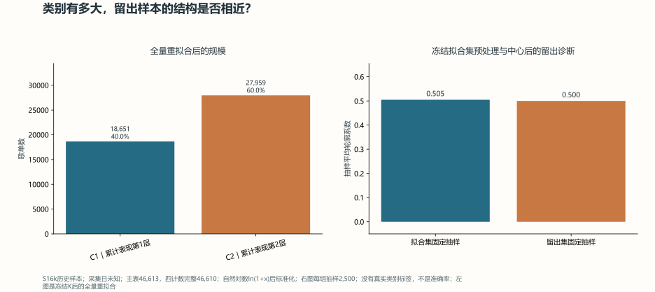
读图：左图是冻结K后全量重拟合；右图仍是只在拟合集学习预处理与中心，再给留出样本分组。
结果：拟合集抽样轮廓系数0.505，留出集13,984条中固定抽样得到0.500。最大类别为C2，占60.0%。同来源留出共享采样偏差，不是未来效果验证。
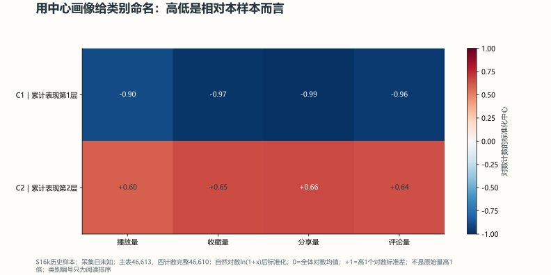
读图：红色高于全体对数均值，蓝色低于；数字是标准差单位。
结果：类别按四维标准化中心均值排序为C1—C2，暂称“累计表现第几层”。这是阅读编号，既不是用户价值评分，也不是平台官方等级。
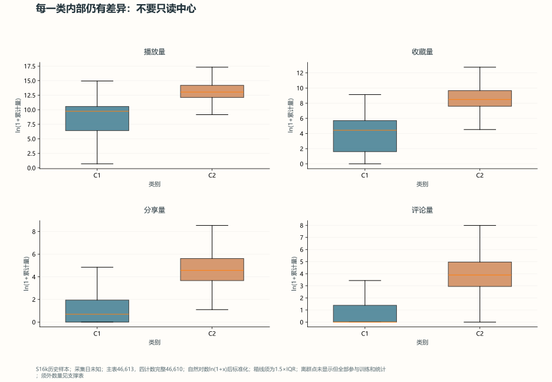
读图：中线是对数尺度中位数，箱体是中间50%；组间仍可能重叠。
结果：离群点仅不显示，未从训练或画像中删除；须外数量已导出。输入指标上的组间差异本来就是聚类目标，不能当成独立验证。
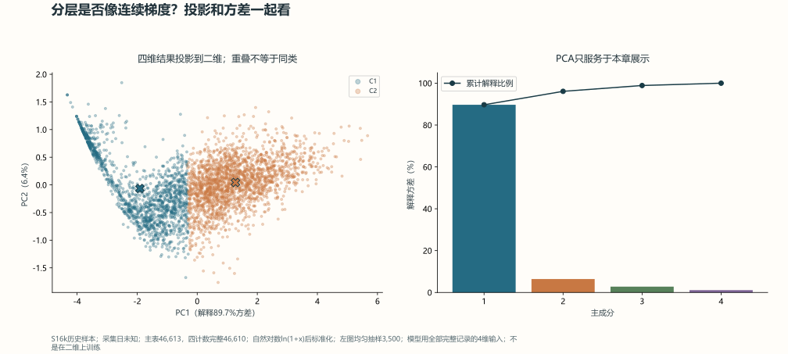
读图：每点是一条预存抽样歌单；X为投影中心；右边同时看PC1和PC2保留多少方差。
结果：前两主成分合计保留96.1%的标准化方差。二维图只能辅助观察，不能只看点云形状就认定存在自然、离散的人群。
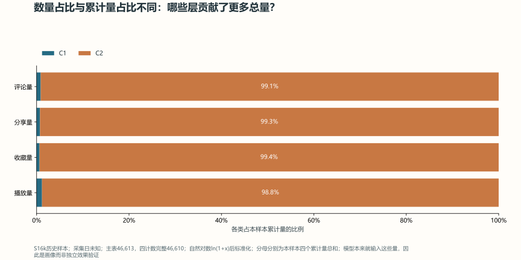
读图：每根条形的分母是全体样本该指标的累计量总和，不是独立用户数。
结果：C1占歌单40.0%、占播放总量1.2%；C2占歌单60.0%、占播放总量98.8%。这些是历史累计贡献，不代表新增推广的边际收益。
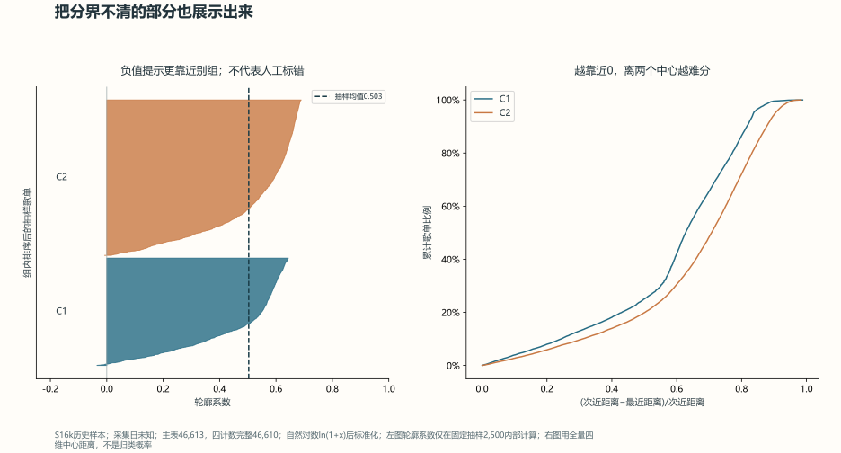
读图：左图负值说明在该抽样内部平均更接近其他组；右图接近0表示最近两个中心的距离相近。
结果：全量重拟合结果的固定抽样均值为0.503；2,500条中15条轮廓系数为负。边界示例已保留，不将它们说成真实标签错误。
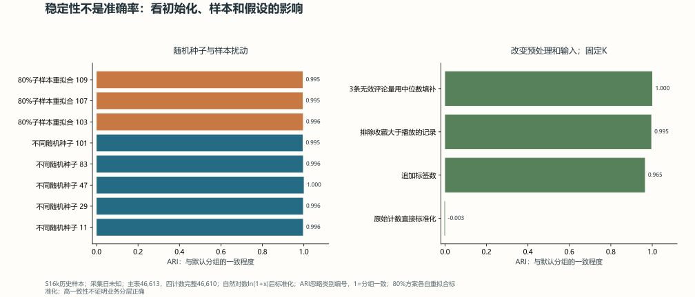
读图：ARI对照同一批记录的两份划分；换标签编号不会影响分数。
结果：不同种子与80%子样本方案的最低ARI为0.995；改成原始计数直接标准化，与默认对数方案的ARI为-0.003。后者改变了距离的含义，不能用惯性大小直接评判哪套更好。
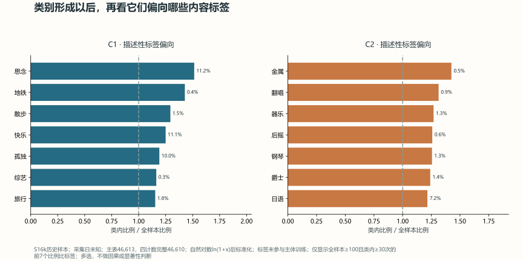
读图：横轴为类内标签比例除以全样本标签比例；标注为类内比例，不是关联规则置信度。
结果：只展示全样本≥100、类内≥30次标签中比例比最高的7个，降低极少数标签支配展示的情况；这仍是探索性画像，不做显著性或因果结论。
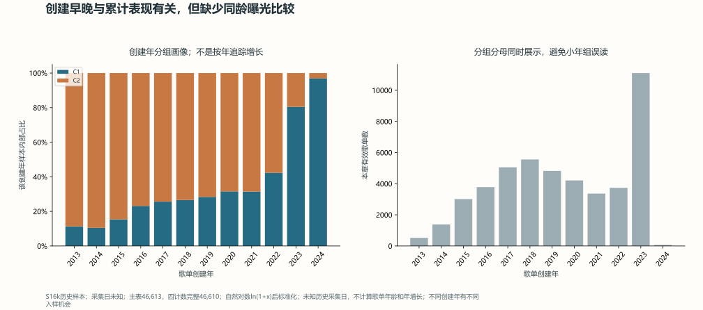
读图：左图每个创建年的类别占比加起来100%；右图是该创建年的实际样本数。
结果：这是当前样本按创建年分组的横截面画像，既不是逐年流量趋势，也不是同一个歌单随时间成长的轨迹。
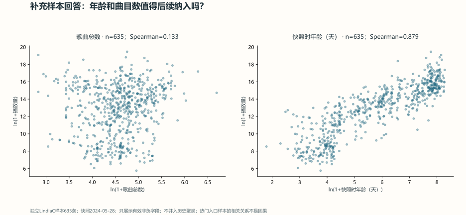
读图：坐标用ln(1+x)便于显示，Spearman用字段排序关系；正相关也不能证明加歌或等待必然增加播放。
结果：歌曲总数与播放的Spearman相关为0.133（n=635）；快照时年龄（天）与播放的Spearman相关为0.879（n=635）。入口偏向热门歌单，不能推到平台全体，也不能用其日期填补主表历史采集日。
问题 3
分析方法：分组比较、多元线性与岭回归，按创建者昵称/重复长文本保守分组，训练侧预处理、验证选参、冻结后测试。
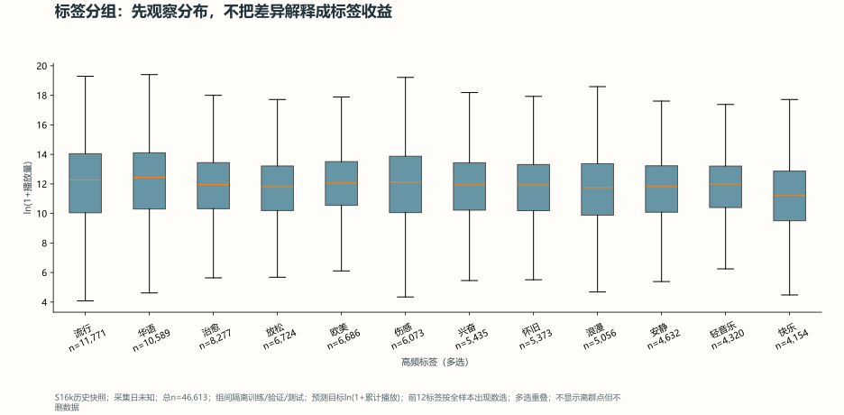
读图：比较中位数、箱体与重叠范围
结果：各组混有不同创建年、曝光与创建者差异，不能从箱线图推因果。
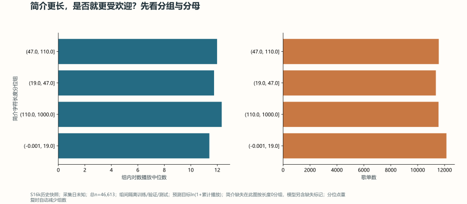
读图：左图中位数，右图对应分母
结果：这是探索分组，简介长度不能替代内容质量。
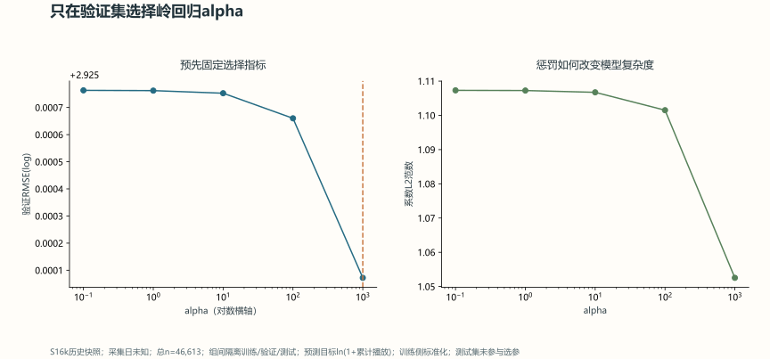
读图：左图越低越好；右图是系数大小而非误差
结果：本次冻结alpha=1000。
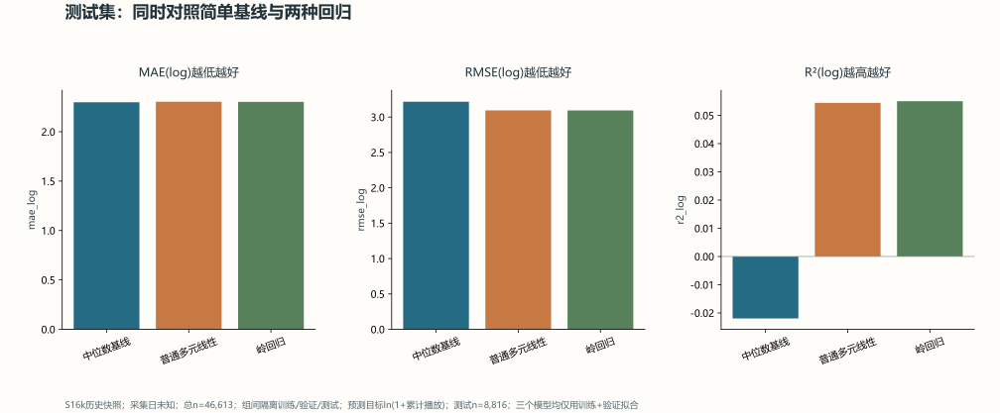
读图：同一测试集比较；原始尺度误差另见表
结果：岭回归测试R²(log)=0.055。
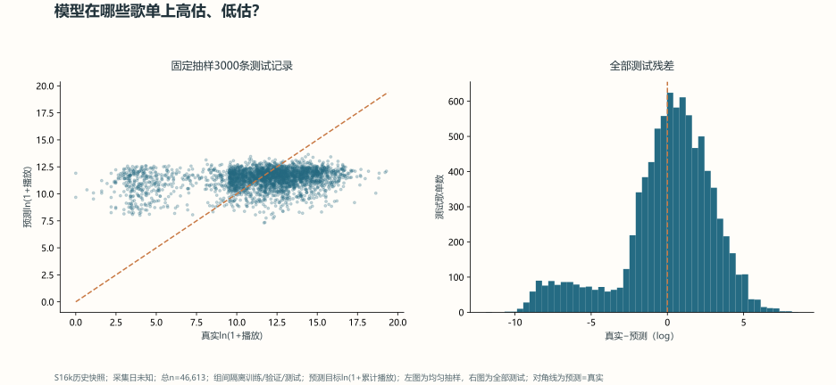
读图：偏离对角线越大误差越大；残差正值为低估
结果：全部测试平均残差=0.006，残差偏度=-0.925。
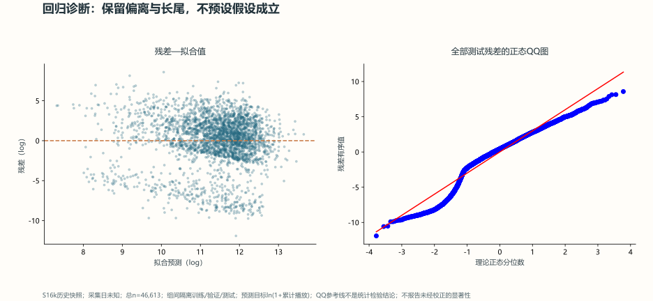
读图：QQ偏离直线提示尾部/形状不同；散点漏斗形提示方差变化
结果：|残差|与预测的Spearman=-0.163；仅为诊断，不证明因果。
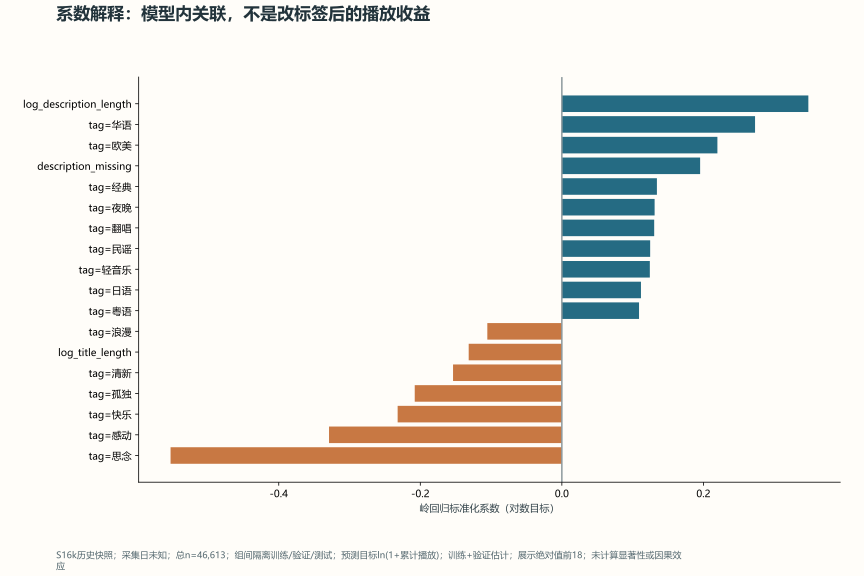
读图：其他输入固定下的线性模型关联；相关标签可分担或抵消系数
结果：系数大小还受频率、共线性和遗漏变量影响；不能按系数直接优化标题。
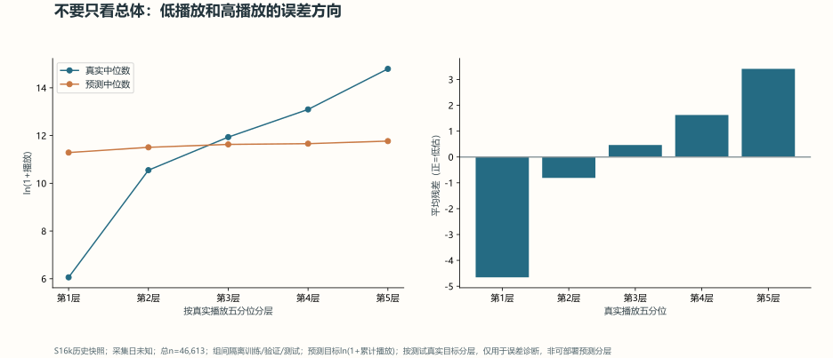
读图：低估为正，高估为负；各层n见表
结果：内容特征可能不足以区分头部曝光差异；不能用回归均值预测代替真实流量。
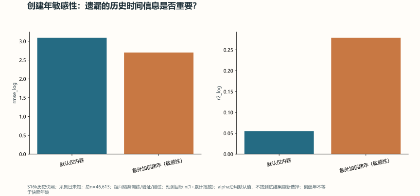
读图：比较默认与额外年份模型的测试变化
结果：此对照只暴露混杂和信息不足，不替换默认内容模型，也不推断增长率。
问题 4
分析方法：分词与停用词、TF-IDF、LDA、题数/连贯性/种子诊断和高权重及混合原文核查。
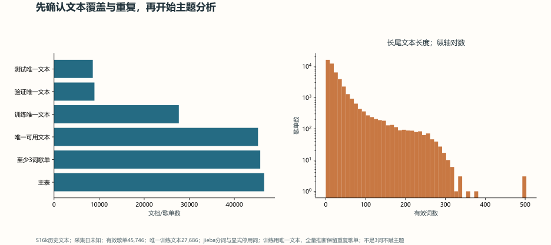
读图：左侧是不同口径分母，右侧是长度长尾
结果：标题/简介缺失、短文本和复制文本会影响主题解释；没有自动补齐。
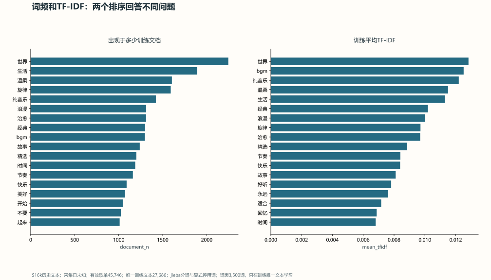
读图：左图按文档频数，右图按全训练文档平均TF-IDF
结果：平均TF-IDF仍受常见度影响，原文与停用词选择须共同检查。
读图：按验证困惑度选择，其他指标如实保留
结果：冻结4个主题；测试唯一文本困惑度=2092.7，不再用于调题数。
读图：同一词可属于多个主题；不强制独立类别
结果：需要结合高权重和混合原文样例审核，不能仅凭前几个词确定用户意图。
读图：混合权重接近1较集中，较低说明多主题混合
结果：可用文本最大主题权重中位数=0.673；有297条词表未覆盖，明确不解释。
读图：每行均值权重加和为1；看不同标签的主题侧重
结果：主题与标签有关联也不代表主题解释已获人工验证。
读图：看中位数及分布重叠，不能只看最高一类
结果：这是当前样本关联，不能据此声称某主题导致高播放。
读图：接近1表示词分布相近，低值提示不稳定
结果：所有匹配平均余弦=0.759；仍需要人工结合原文确认名称。
| 词语排序 | 代表词 | 主题词权重 |
|---|
问题 5
分析方法：统一分集比较多数类基线、逻辑回归、树、随机森林、GBM、线性/RBF SVM、MLP及PCA＋MLP；验证选模型与阈值。
读图：竖线是冻结训练分位数门槛，不是业务通用标准
结果：训练门槛为1.6759%；测试正类率为26.7%。
读图：AP高好；耗时只供本机相对参考，不是通用性能结论
结果：主模型按验证AP冻结为MLP；测试结果不用于改选。
读图：AP/F1越高越好，不能把AP读成准确率
结果：完整表同时保留准确率、平衡准确率、精确率和召回率；没有隐藏表现弱的模型。
读图：ROC对假正率，PR直接显示召回与精确率代价
结果：PR曲线需要结合正类率；SVM决策分数只用于排序，不当作概率。
读图：右下为召回，左下为漏判比例，右上为负类误报比例
结果：主模型不一定每项指标都最好；选择依据和阈值保持冻结。
读图：明显训练—验证差距提示拟合了训练特征噪声
结果：外部验证仍用于选参，会存在选择偏差；最后测试是本次主要泛化报告。
读图：从根节点按条件走到叶；颜色随类别比例变化
结果：实际训练深度由验证选择；更深节点未画出，不应把截取图当完整决策规则。
读图：训练损失与内部验证监控不同；最终看外部测试AP
结果：内部早停按随机划分，未按创建者组隔离；外部两组仍隔离，此限制不隐藏。
读图：置换后AP下降大表示当前模型更依赖该信息族
结果：相关信息族可相互替代；置换是模型诊断，不是因果解释。
读图：各层正类率不同，AP需和各层基准一起看
结果：聚合收藏/播放比不是用户转化概率；无曝光和用户级分母。
读图：提高阈值通常更谨慎，可能降低召回；按需求应在验证侧决定
结果：本次阈值=0.30119，冻结后才报告测试，不按测试调参。
问题 6
分析方法：核验89个快照完整曲目集合，比较标签/曲目Jaccard与网络；三次20%掩码补全对照热门基线。
读图：不合格样本留审计、不用于主体相似度
结果：89/89条完整核验，主体关系不是从历史部分记录凑出来的。
读图：0表示在当前完整集合中没有重叠
结果：曲目零重叠配对3,579/3,916。
读图：右下区域表示标签相似但曲目重叠小
结果：标签描述的是风格/场景等维度，不能替代曲目集合；同曲目也可能有不同编排或定位。
读图：亮块表示一组曲目重叠，白对角线不参与自推荐
结果：多数目的性跨标签样本可能相似度很低，这也是候选库有限的表现。
读图：两个坐标不是可直接计算内容增减的同口径计数
结果：差异混合了时间变化和历史漏采，不计算删歌率、增歌率或精确增长。
读图：曲目邻居只看可见80%；任何缺候选回退都记录
结果：这不是个性推荐点击/满意度实验；仅能检验当前候选库里的歌单补全能力。
读图：左图0表示其他歌单完全没有隐藏曲目；右图看掩码波动
结果：隐藏曲目平均可恢复比例=20.2%；相对热门基线的歌单bootstrap差异表完整保留。
| 曲目Jaccard区间 | 配对数量 | 平均标签Jaccard |
|---|
问题 7
分析方法：评论去重、发表时间/采样来源/角色分组、创建者排除、多标签词语初筛、TF-IDF和逐歌单定位对照。
读图：主分析other，unknown单列，creator排除
结果：主体覆盖52/89歌单；其余缺少已知非创建者观察不能直接判断定位。
读图：热门采样容易保留旧高赞评论；时间分布受截取机制影响
结果：评论发表范围2014—2026年；近90天重算162条。
读图：排序条形和累计曲线显示本批采样集中度
结果：后续线索同时报告涉及歌单数，不只数评论，避免少数歌单刷屏支配。
读图：主/未知角色分母分别计算；不能按比例直接比较用户态度
结果：规则不理解否定与反讽，所有命中必须允许人工修正；不报告准确率。
读图：词命中只说明文本提及，不证明在该场景播放
结果：需要阅读原文与定位对照，不能把命中比例称真实使用场景占比。
读图：同一词覆盖数和相对权重并列，避免只看高权重罕词
结果：关键词不能代替主题真值、情绪极性或用户满意度。
读图：各类累计为89，不是评论条数，场景间可重叠
结果：当前可形成内容复盘清单，但不能估计总体定位匹配率或用户满意度。
读图：更新/版权等词可能是介绍或回复，不自动认定为问题
结果：本地已保留原文核查记录；不把词命中总数称确认投诉数。
读图：来源分组点赞差异可能来自选样，不是用户态度变化
结果：未知角色集中在旧批次，不能把两角色组词频差异直接解释成听众群体差异。
| 角色 | 场景线索 | 命中评论数 | 该角色评论分母 | 命中占比 |
|---|
历史数据来自S16k，其声明许可为CC BY-NC-SA 4.0；本项目保留来源与相同许可条件。635条补充仓库未发现明确许可，保留原作者来源，不作平台随机样本。新采是历史ID定向刷新，评论普通/热门截取有上限，非全量历史。
分析结构参考课程提供的《在线音乐歌单分析》（原案例署名qsy），本项目使用Python复现并扩展，结果来自本项目实际数据与支撑表。模型训练、选参和测试分开，保留弱结果、未达标规则与未核验文本。AI初筛和词语规则未经人工复核，不作为真实标签。
本仓库仅提供最终展示、分析案例、图表和汇总结果表，不包含Notebook、学习练习、采集脚本或运行环境。交互使用本地预存数据，可离线打开；完整查看请下载整个仓库。
此处是当前样本分析，不代表网易云官方观点。